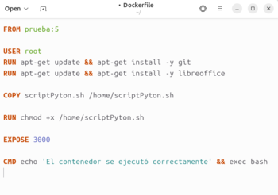
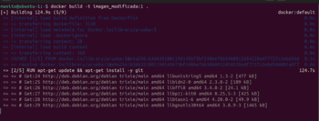
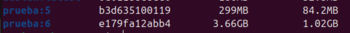
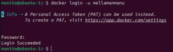
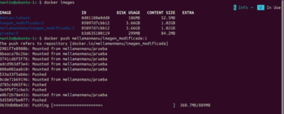

Actividad 5.1 Modificación de imagen:
Hay dos formas de modificar una imagen, la primera es creando un Dockerfile en base a la imagen que queremos modificar y en el Dockerfile meter las modificaciones que queremos hacer. La segunda forma es desde un contenedor de nuestra imagen, modificar el contenedor, instalando herramientas o creando scripts, y posteriormente hacer un Docker commit.
Opción 1: Dockerfile en base a una imagen ya creada
En este caso usaremos la primera opción y crearemos un Dockerfile con las modificaciones, para crear este Dockerfile usaremos los mismos comando que usamos para crear el anterior y en ellos meteremos las modificaciones.
A continuación, se anexarán una serie de imágenes que demuestran dicho proceso
 Comparación del tamaño
A continuación, se anexa el link que lleva a la documentación del punto 5.1: link
Actividad 5.2 Publicación en Docker Hub:
Paso1. Crear cuenta:
primero que todo, creamos una cuenta en Docker hub que será donde se va a publicar la imagen.
Paso2. Cambiar la etiqueta:
Cambiamos la etiqueta de la imagen que queremos publicar, con este formato nombre_cuenta/nombre_imagen:etiqueta.
Paso3. Login:
vamos a hacer login con Docker login para conectarnos a nuestra cuenta de Docker hub.
Paso4. Push:
Ahora vamos a hacer el push de nuestra imagen con Docker push.
Paso5.Verificar:
verificamos en Docker hub si nuestra imagen se publicó correctamente.
Paso6. Hacerla pública (si no lo está):
si nuestra imagen no es publica, la marcamos como publica para que otras personas puedan acceder a ella.
Paso7 Documentar:
Hacer un README en Docker hub para que cuando las personas busquen nuestra imagen, se puedan guiar con el funcionamiento de esta.
A continuación, se anexa el link que lleva al video del punto 5.2: link
A continuación, se anexa el link que lleva a la imagen subida en docker hub: link